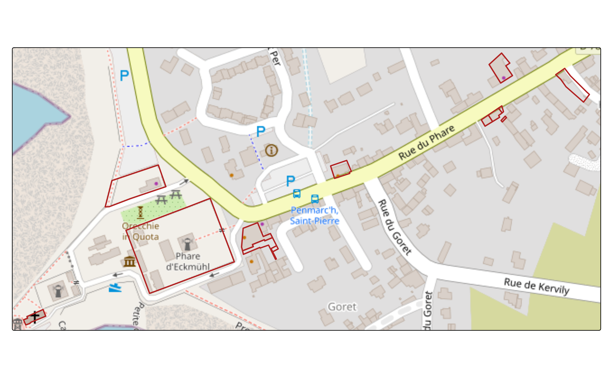

Parcelles cadastrales - Personne morale (FR)
cadastral-parcels-legal-entity-fr.Rmd
library(Rsequoia2)
#> Attempting to load the package cache ... No cache found.
#> Will try to reconfigure qgisprocess and build new cache ...
library(tmap)
library(openxlsx2)
library(sf)
#> Linking to GEOS 3.12.1, GDAL 3.8.4, PROJ 9.4.0; sf_use_s2() is TRUEComme pour chaque processus Sequoia, la première étape consiste à créer un répertoire de travail (ici temporaire).
seq_dir <- file.path(tempdir(), "MY_FOREST")
dir.create(seq_dir)Qu’est-ce qu’une personne morale
En France, une personne morale, contrairement à une personne physique, à sa propre existence juridique. Elle est identifié par un code SIRET ou SIREN. En forêt, on retouve classiquement les groupements forestiers.
La Direction Générale des Finances Publiques (DGFiP) met à disposition un fichier contenant toutes les parcelles cadastrales dont le propriétaire est une personne morale.
Rsequoia2 facilite l’accès à ce jeux de données et la
recherche de personne morale.
Trouver une personne morale
La fonction get_legal_entity() télécharge et formate les
données cadastrales pour s’intégrer dans un processus Sequoia..
Les données peuvent être chargées à partir d’un code département ou d’un code INSEE.
Le chargement par département peut être plus long, mais il permet d’identifier automatiquement les parcelles d’un propriétaire situées dans plusieurs communes du département.
# cp: cadastrals parcels
insee <- c("29158", "29165")
legal_entity_cp <- get_legal_entity(insee)
#> ℹ Downloading legal entity datasets...
#> ⠙ 21 extracted | 953 MB (296 MB/s) | 3.2s
#> ⠙ 25 extracted | 942 MB (278 MB/s) | 3.4s
#> ⠹ 47 extracted | 1.9 GB (300 MB/s) | 6.4s
#> ✔ Data available at: /home/runner/.cache/R/Rsequoia2/legal_entity
#> ℹ Reading CSV files...
#> ℹ Preparing CSV files...
#> ℹ Generating matrice...
#> ✔ Matrix successfully generated (2329 rows).
head(legal_entity_cp)
#> IDENTIFIANT PROPRIETAIRE IDU REG_NOM REG_CODE DEP_NOM
#> 1 <NA> LES TERRES BLEUES 29158000AB0005 BRETAGNE 53 FINISTERE
#> 2 <NA> LES TERRES BLEUES 29158000AB0006 BRETAGNE 53 FINISTERE
#> 3 <NA> LES TERRES BLEUES 29158000AB0007 BRETAGNE 53 FINISTERE
#> 4 <NA> LES TERRES BLEUES 29158000AB0008 BRETAGNE 53 FINISTERE
#> 5 <NA> TI PORZH LES ROCHERS 29158000AB0011 BRETAGNE 53 FINISTERE
#> 6 <NA> L ATELIER 89 29158000AB0025 BRETAGNE 53 FINISTERE
#> DEP_CODE COM_NOM COM_CODE INSEE PREFIXE SECTION NUMERO LIEU_DIT
#> 1 29 PENMARCH 158 29158 000 AB 0005 DES GOELANDS
#> 2 29 PENMARCH 158 29158 000 AB 0006 DES EMBRUNS
#> 3 29 PENMARCH 158 29158 000 AB 0007 SAINT GUENOLE
#> 4 29 PENMARCH 158 29158 000 AB 0008 DES GOELANDS
#> 5 29 PENMARCH 158 29158 000 AB 0011 ROGER QUINIOU
#> 6 29 PENMARCH 158 29158 000 AB 0025 PIERRE ET JEAN DUPOUY
#> SURF_SIG SURF_CAD
#> 1 NA 0.0370
#> 2 NA 1.2358
#> 3 NA 0.0097
#> 4 NA 0.0765
#> 5 NA 0.0339
#> 6 NA 0.0237
#> SOURCE
#> 1 https://data.economie.gouv.fr/api/v2/catalog/datasets/fichiers-des-locaux-et-des-parcelles-des-personnes-morales
#> 2 https://data.economie.gouv.fr/api/v2/catalog/datasets/fichiers-des-locaux-et-des-parcelles-des-personnes-morales
#> 3 https://data.economie.gouv.fr/api/v2/catalog/datasets/fichiers-des-locaux-et-des-parcelles-des-personnes-morales
#> 4 https://data.economie.gouv.fr/api/v2/catalog/datasets/fichiers-des-locaux-et-des-parcelles-des-personnes-morales
#> 5 https://data.economie.gouv.fr/api/v2/catalog/datasets/fichiers-des-locaux-et-des-parcelles-des-personnes-morales
#> 6 https://data.economie.gouv.fr/api/v2/catalog/datasets/fichiers-des-locaux-et-des-parcelles-des-personnes-moralesRechercher un propriétaire
Une fois le fichier chargé, vous pouvez utiliser la fonction
utilitaire search_legal_entity().
Cette fonction applique une normalisation ce qui rend la recherche robuste aux différences d’accents, de ponctuation, d’espacement et de casse., par exemple :
- “État / Forêts” -> “ETATFORETS”
- ” Le Bois-de l’Orme ” -> “LEBOISDELORME”
- “Société du Chêne” -> “SOCIETEDUCHENE”
L’exemple ci-dessous permet d’identifier tous les GFA (« Groupements Fonciers Agricoles »).
search_mat <- search_legal_entity(legal_entity_cp, prop = "gfa")
unique(search_mat$PROPRIETAIRE)
#> [1] "GFA DE LA TORCHE" "GFA ADPF"search_legal_entity() support plusieurs
propriétaires:
search_mat <- search_legal_entity(legal_entity_cp, prop = c("conservatoire", "espace", "naturel"))
unique(search_mat$PROPRIETAIRE)
#> [1] "CONSERVATOIRE DE L ESPACE LITTORAL ET DES RIVAGES LACUSTRES"
#> [2] "CONSERVATOIRE DE L'ESPACE LITTORAL ET DES RIVAGES LACUSTRES"
#> [3] "SCI ESPACE INTERIEUR"Egalement, la recherche de parcelles peut se faire à partir des lieux-dits.
search_mat <- search_legal_entity(legal_entity_cp, lieu_dit = "phare")
unique(search_mat[,c("PROPRIETAIRE", "LIEU_DIT")])
#> PROPRIETAIRE LIEU_DIT
#> 692 LA VOILERIE DU PHARE
#> 696 379 RUE DU PHARE -PENMARCH DU PHARE
#> 707 ETAT PAR DIRECTION DE L IMMOBILIER DE L ETAT DU PHARE
#> 710 COMMUNE DE PENMARCH DU PHARE
#> 715 ECKMUL DU PHARE
#> 720 VINCEAUR DU PHARE
#> 745 SCI BOULANGERIE COAT PIN DU PHARE
#> 749 BRISE DU LARGE DU PHARE
#> 768 SCI PLOUGONVEN DU PHAREEnregistrer la matrice pour démarrer un processus Sequoia
Le jeu de données des personnes morales ne contient pas de géométrie.
Il sert à générer une matrice Excel (*_matrice.xlsx)
nécessaire au démarrage d’un processus Sequoia. La fonction
seq_write() permet de créer ce fichier.
Le data.frame retourné par
get_legal_entity() est déjà formaté pour Sequoia, incluant
la colonne "IDENTIFIANT".
Il est recommandé de renseigner cette colonne directement dans R avant d’enregistrer la matrice, afin d’éviter toute modification manuelle dans Excel.
id <- "MY_FOREST"
search_mat$IDENTIFIANT <- id
seq_write(
x = search_mat,
key = "matrice",
dirname = seq_dir,
id = id
)
seq_parca(seq_dir)
#> ℹ Downloading BDP from IGN...
#> ✔ 12 of 13 ETALAB geom successfully replaced with BDP geom.
#> ✔ No area inconsistencies (cadastre vs GIS) detected.
#> ✔ Layer "v.seq.parca.poly" with 13 features saved to 1_SEQUOIA/MY_FOREST_SEQ_PARCA_poly.gpkg.
#> ✔ Table "x.seq.matrice" saved to MY_FOREST_MATRICE.xlsx.
#> ✔ _matrice.xlsx also saved as MY_FOREST_MATRICE_20260219T082318.xlsx for safety.
parca <- seq_read("parca", seq_dir)
tm_tiles("OpenStreetMap")+
tm_shape(parca)+
tm_borders(col = "firebrick", lwd = 2)